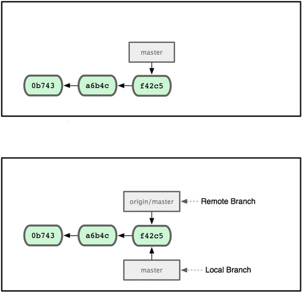
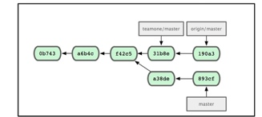
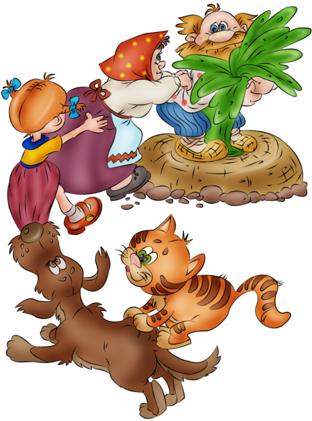

Git. Работаем в команде.
Мини-лекция для MSK команды. Владислав Лежнев aka LiVsI

iMedicum
Мини-лекция для MSK команды. Владислав Лежнев aka LiVsI
$ git
usage: git [--version] [--help] [-C <path>] [-c name=value]
[--exec-path[=<path>]] [--html-path] [--man-path]
[--info-path] [-p|--paginate|--no-pager] [--no-replace-objects]
[--bare]
[--git-dir=<path>] [--work-tree=<path>]
[--namespace=<name>] <command> [<args>]
PS: Да, я люблю git command line.
git commit --interactive
еще не все :)
еще не все :)
еще не все :)
Теперь - все

|  |
|  |  |
И дедке и бабке и внучке с жучкой.И они дружной толпой начинают в нее комитить
git fetchgit merge origin/master
git pullПока вы не опубликовали его в origin - он виден только Вам
git push
git pullgit push
git stash
git stash list
git stash applygit stash pop
git config --global alias.co checkoutgit config --global alias.st status
git log --pretty=format:"%an <%aE>" | sort -u | wc -l
git log --graph --abbrev-commit --decorate --date=relative --format=format:'%C(bold blue)%h%C(reset) - %C(bold green)(%ar)%C(reset) %C(white)%s%C(reset) %C(dim white)- %an%C(reset)%C(bold yellow)%d%C(reset)' --alllog --pretty=format:"%h %ad | %s%d [%an]" --graph --date=short
git push origin :BRANCHgit checkout --track origin/BRANCHgit checkout -b BRANCH origin/BRANCH
git taggit tag -l 'v1.4.2.*'git tag -a v1.4 -m 'my version 1.4'
git push origin --tagsgit tag -d tag_namegit push origin :refs/tags/tag_namegit tag -f tag_namegit push -f origin tag_name
git bisect start;
git bisect bad
git bisect good tag|commitgit bisect bad или git bisect goodgit bisect reset